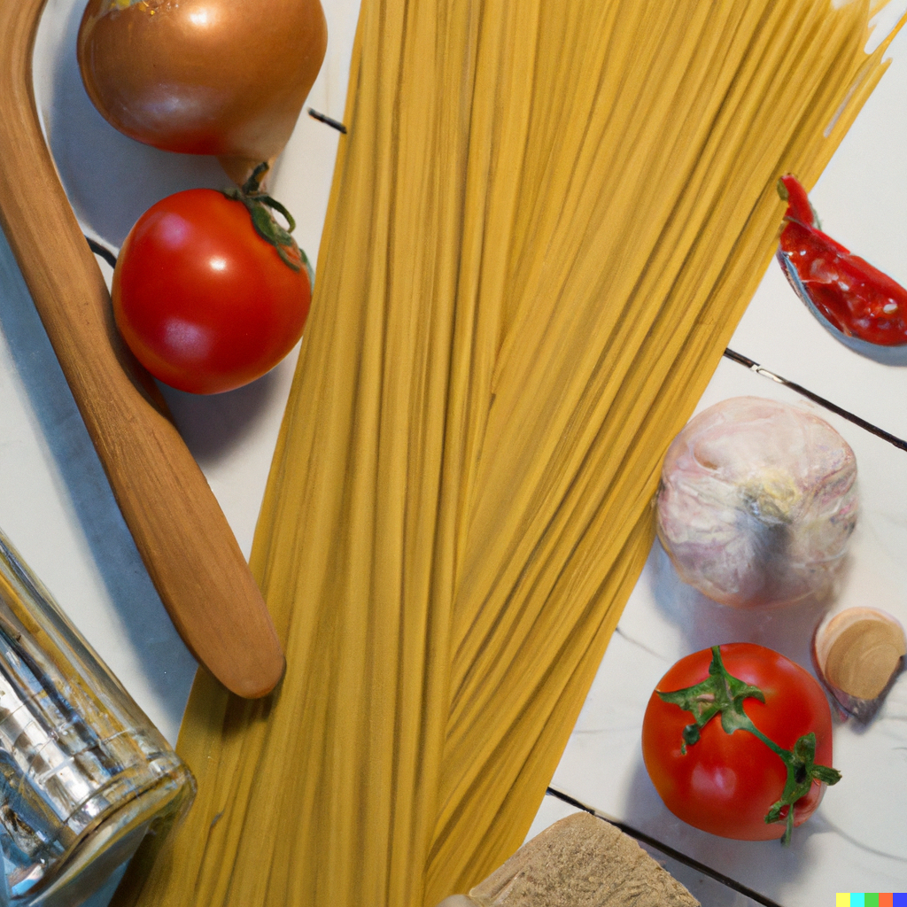

Presentacion
nuestros menus estan definidos como los mas deliciosos representantes de la comida tradicional italiana , con un toque personalizado de nuestros maestros de cocina junto a los mas deliciosos ingredientes.
Elegi lo mejor

Variedades tipos de pastas y salsas para todos los gustos
compromiso

Nuestro compromiso con nuestros clientes es ofrecer platos vegetarianos y veganos. Invitando a todos a disfrutar de una velada especial y momentos inolvidables.